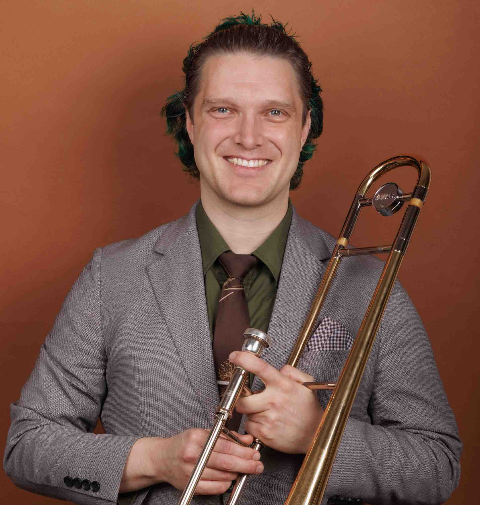

NOTE: Site under construction – I'm working on it! :)
Hi! I’m Matt Musselman and I’m a trombonist, composer, and educator based in New York City.
This is me:

My trombone playing has taken me from studies at The Juilliard School to performing with Feist at Radio City Music Hall to recording with Vince Giordano & The Nighthawks for the soundtrack to the HBO series Boardwalk Empire.
This is my trombone playing:
I can be heard regularly around New York City with Vince Giordano & The Nighthawks, the Baby Soda Jazz Band, Gordon Au & The Grand Street Stompers, The Red Pavilion Jazz Band, and various other groups including my own band Grandpa Musselman & His Syncopators.
I would love to play for you, either in your ensemble or with my own band!
I’ve composed the music for animated shorts such as Urf Durfler: PI, arranged Great American Songbook repertoire for Broadway vocalist Euan Morton, orchestrated Kurt Weill compositions for Weimar cabaret artist Daniel Isengart, and transcribed Shanghaishidaiqu songs for regular performances at the Asian neo-noir nightclub The Red Pavilion.
As a music copyist, I have a vast skill set. I’m able to:
As a Juilliard-trained musician and former NYC DOE special education teacher, I have a strong background in both music and education.
I teach a wide range of subjects in individual or group settings:
https://drive.google.com/file/d/1wH4YneQL0Qx34j4eAhQ0Im7phuv4_fGH/view?usp=drive_link